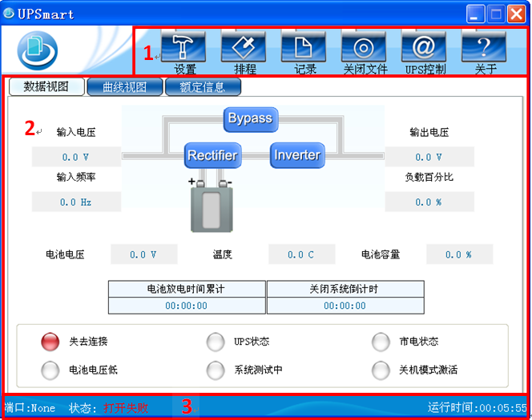

UPSmart使用手册
主界面说明
进入UPSmart后会出现如下所示主界面:

图1: UPSmart主界面
1. 功能选择区
安装完成后，即可开始设定各项功能的参数值。各参数值会影响到UPSmart程序是否能正常运作 ，对于各个参数设置在后序章节作介绍。
2. UPS状态显示区
UPSmart正确连接到UPS后，会将相关的信息显示于此区，使用者可选择以流图 、曲线、码表等方式来显示，显示之内容包含输入电压、输出电压、频率、负载、温度等信息。
3. 软件状态区
该区域能够显UPS的串口连接号、串口连接状态、短信模块连接状态、系统运行时间等等信息。